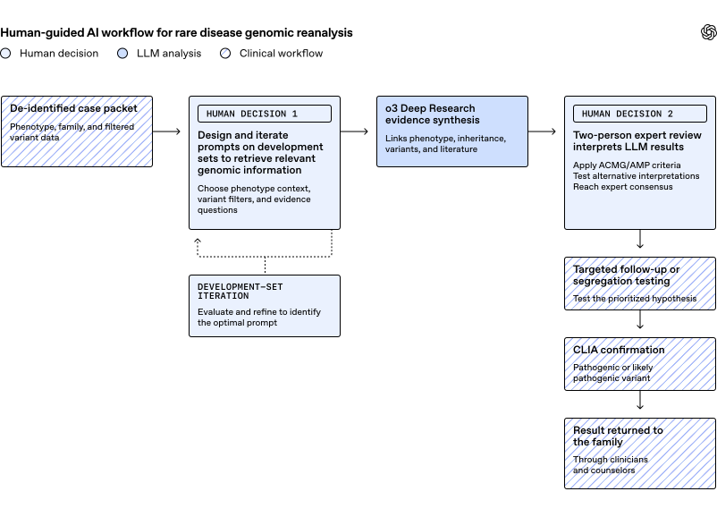

9살 아이가 가라테 수업에서 예전처럼 자세를 낮추지 못했다. 축구장에서도 느려졌고, 걸을 때 발끝으로 서기 시작했다. 병원은 원인을 찾지 못했고, 검사는 이어졌고, 답은 거의 20년 동안 나오지 않았다.
OpenAI가 소개한 NEJM AI 연구의 진짜 무게는 여기 있다. o3가 “희귀질환을 진단했다”는 이야기가 아니다. 오래 답을 못 찾던 가족에게, 다시 볼 만한 단서를 찾아줬다는 이야기다.
숫자는 간단하다.
- 기존 전문가 분석에서도 미해결로 남은 사례: 376건
- o3 Deep Research가 후보 설명을 제시한 뒤, 전문가 검토와 추가 검사로 확정된 진단: 18건
- 추가 진단률: 4.8%
4.8%는 커 보이지 않을 수 있다. 하지만 이건 “처음 보는 환자”가 아니다. 이미 유전체 검사와 전문가 리뷰를 거쳤고, 여러 파이프라인에서도 답이 안 나온 케이스들이다. 그런 오래된 미해결 파일에서 18개의 답이 나왔다면, 작게 볼 수 없다.
다만 이 연구를 제대로 읽으려면 질문을 바꿔야 한다.
AI가 얼마나 똑똑했나?
보다 중요한 질문은 이거다.
AI가 뭘 읽을 수 있게 만들어줬나?

이 그림의 핵심은 “AI → 진단”이 아니다. 비식별화된 환자 데이터, LLM의 근거 합성, 전문가 검토, 추가 검사, 임상 확인, 가족에게 결과 반환이 하나의 사람 주도 루프로 이어진다.
오래된 미해결 사례가 갑자기 풀릴 수 있는 이유
유전체 검사를 했는데도 진단이 안 나오는 경우가 많다. OpenAI 원문은 extensive testing과 specialist review 이후에도 희귀질환 환자의 roughly half가 명확한 유전 진단을 받지 못한다고 설명한다.
이건 검사 한 번 더 하면 바로 풀리는 문제가 아니다.
환자의 genome은 그대로다. 하지만 그 genome을 해석하는 지식은 계속 바뀐다.
어제는 의미를 몰랐던 유전자가 오늘 논문에 나온다. 예전에는 VUS, 즉 “의미 불명 변이”였던 것이 ClinVar에서 pathogenic으로 재분류될 수 있다. 어떤 질환은 한두 편의 case report가 쌓인 뒤에야 증상 패턴이 보인다.
그래서 희귀질환 재분석은 단순 분석이 아니라 유지보수 문제다.
한 번 검사하고 끝나는 게 아니라, 오래된 미해결 파일을 계속 움직이는 지식베이스와 다시 맞춰봐야 한다. 사람 전문가가 이걸 수작업으로 계속 하기엔 너무 넓고, 너무 오래 걸린다.
원문에 나온 Catherine Brownstein의 말이 정확히 이 지점을 찌른다.
“The bottleneck is time. An expert can devote only so much of their day to any one particular person.”
— Dr. Catherine Brownstein, Boston Children’s Hospital’s Manton Center for Orphan Disease Research
병목은 지능이 아니라 시간이다. 전문가는 한 사람에게 하루 전체를 쓸 수 없다.
o3에게 병원 데이터를 통째로 던진 게 아니다
이 연구를 “AI가 병원 데이터베이스를 뒤졌다”고 이해하면 거의 틀린다.
이런 구조가 아니었다.
병원 EMR 전체 + 원시 유전체 파일 전체
↓
o3가 알아서 읽고 파싱
↓
진단원문이 말하는 구조는 훨씬 조심스럽다. 연구팀은 각 환자마다 de-identified packet을 만들었다. 개인정보를 제거한, 환자별 사건 파일 같은 것이다.
이 패킷에는 다음이 들어갔다.
- 환자의 증상을 표준화한 Human Phenotype Ontology, HPO terms
- 가끔 포함되는 clinician notes
- 기존에 붙어 있던 descriptive clinical diagnosis
- 나이, 성별 같은 metadata
- filtered variant table, 즉 미리 걸러낸 유전 변이 표
- 각 변이의 rarity
- 단백질에 미치는 predicted effect
- ClinVar classification
- 가족 구성원별 signal quality
- 대부분의 경우 child와 biological parents 양쪽 데이터, 즉 trio 정보
이걸 평범한 말로 바꾸면 이렇다.
연구팀은 o3에게 원시 데이터 덩어리를 던진 게 아니라, “이 환자에게 중요한 증상은 이것이고, 볼 만한 변이는 이것이며, 부모 데이터와 품질 신호는 이렇다”는 식의 정리된 사건 파일을 만들어줬다.
여기서 이미 절반의 일이 끝난다. AI가 강해지는 순간은 대개 모델만 좋아질 때가 아니라, 모델이 읽을 수 있는 형태로 세계가 정리될 때다.
그럼 이건 SQL인가, 그래프인가, 그냥 프롬프트인가
가장 기술적으로 궁금한 대목은 여기다.
연구팀이 “연결”을 뭘로 했을까. SQL join일까. 그래프DB일까. 아니면 그냥 문서일까.
OpenAI 원문은 SQL schema나 graph database를 말하지 않는다. 대신 “de-identified packet”과 “filtered variant table”이라고 말한다. 공개된 설명만 놓고 보면, 핵심은 특정 DB 기술이 아니라 LLM이 읽을 수 있게 직렬화된 case-level summary다.
물론 내부에는 여러 기술이 있었을 것이다.
HPO 자체는 ontology라 그래프 성격이 있다. variant annotation은 기존 bioinformatics pipeline에서 나온다. ClinVar, population frequency, gene-disease relation 같은 DB도 붙는다. 병원 내부 데이터는 SQL이든 파일이든 LIMS든 어딘가에 저장돼 있었을 가능성이 높다.
하지만 o3에게 들어간 마지막 형태는 이런 조합에 가깝다.
표준화된 증상 HPO
+ 임상 메모
+ 환자 메타데이터
+ 필터링된 변이 표
+ 가족 구성원별 signal quality연결은 이런 식으로 일어난다.
환자에게 HPO A, B, C가 있다
→ gene X 관련 질환도 HPO A, B, C와 겹친다
→ 환자에게 gene X의 희귀하고 damaging할 수 있는 variant가 있다
→ 부모 데이터상 de novo 또는 recessive pattern이 맞는다
→ ClinVar/논문 근거가 있다
→ 이 조합을 plausible molecular explanation으로 제안한다그러니까 이 연구의 핵심은 “SQL이냐 그래프냐”가 아니다. HPO + 변이 표 + 가족 유전 패턴 + 문헌 근거를 한 환자 단위로 묶어 LLM이 추론할 수 있게 만든 것이다.
이걸 “case packet”이라고 부르면 편하다. 정식 표준명이라기보다, AI가 읽을 수 있게 정리한 비식별 환자 파일이다.
모델에게 시킨 일은 “정답 맞히기”가 아니었다
연구팀은 o3에게 유전자 하나를 찍으라고 하지 않았다.
원문 표현은 이렇다.
The team asked the model to propose the most plausible molecular explanation and to show its work.
가장 그럴듯한 분자적 설명을 제안하고, 그 근거를 보여달라는 요청이다.
이 차이가 크다. “유전자 랭킹 1위”만 나오면 전문가는 다시 처음부터 봐야 한다. 하지만 모델이 증상, 유전 방식, 변이 영향, ClinVar, 문헌 근거를 묶어 설명하면, 전문가는 그 설명을 검토할 수 있다.
이 워크플로우를 원문은 explanation-first reasoning layer on top of existing genomic pipelines라고 부른다.
기존 유전체 파이프라인 위에 올라간 “설명 우선 추론 레이어”. 좋은 표현이다. AI가 의사 대신 판정하는 게 아니라, 사람이 검토할 수 있는 설명을 먼저 만든다는 뜻이다.
376건 중 18건 — 숫자보다 중요한 것은 “어떤 케이스였나”다
연구팀은 네 그룹의 미해결 사례를 다시 봤다.
| Cohort | Cases | Diagnoses surfaced | Yield |
|---|---|---|---|
| Neurodevelopmental | 100 | 10 | 10.0% |
| Neuromuscular disease | 61 | 4 | 6.6% |
| Sudden unexpected death in pediatrics | 200 | 2 | 1.0% |
| Early psychosis | 15 | 2 | 13.3% |
| Total | 376 | 18 | 4.8% |
여기서 early psychosis는 15건뿐이라 13.3%라는 숫자를 크게 해석하면 안 된다. cohort마다 단일 유전자 질환으로 설명될 가능성도 다르다.
중요한 건 4.8%라는 평균보다, 이 사례들이 이미 많이 검토된 파일이었다는 점이다. 원문은 many had already been examined by multiple commercial or institutional pipelines and discussed by multidisciplinary teams라고 말한다.
상업·기관 파이프라인을 거쳤고, 다학제 팀에서도 논의됐던 케이스들이다. 그런 파일에서 추가로 18건이 나왔다.
흥미로운 점은 18건 중 7건이 rediscovery였다는 사실이다. local research workflow 밖에서는 이미 진단이 있었지만, 연구팀이 본 record에는 없던 경우다. 이건 AI의 추론력만큼이나 의료 데이터 운영의 문제를 보여준다.
답이 세상 어딘가에는 있었는데, 환자 파일 안에서는 연결되지 않았던 것이다.
가장 인상적인 장면은 22번 염색체였다
원문에서 기술적으로 가장 재미있는 사례는 early psychosis cohort에 나온 22q11.2 deletion이다.
모델 입력에 그 structural event가 명시적으로 적혀 있지 않았다. 그런데 o3는 chromosome 22의 low-quality calls가 이어지는 패턴과 아이의 cardiac, immune, neurodevelopmental, psychiatric features를 연결했다.
그리고 DiGeorge syndrome과 관련된 22q11.2 deletion 가능성을 제안했다.
후속 genome sequencing으로 이 가설은 확인됐다.
이 장면이 중요한 이유는 모델이 “표에 있는 변이 중 하나”만 고른 게 아니기 때문이다. 품질 신호의 이상과 증상 조합을 같이 보고, 표면에 적히지 않은 구조변이 가능성을 끌어냈다.
또 모델은 prompt가 one monogenic cause를 요구했는데도, 더 복잡한 설명을 내놓기도 했다.
- LAMA2와 FOXP1 변이가 함께 muscle feature와 neurodevelopmental feature를 설명한 사례
- TTN과 SRPK3가 관련된 previously unrecognized digenic explanation 사례
단일 유전자 하나로 끝내지 않고, 두 유전자가 함께 설명력을 갖는 경우도 제안했다는 뜻이다.
Kyra의 사례가 이 연구를 숫자 밖으로 끌어낸다
다시 Kyra 이야기로 돌아가보자.
Kyra는 9살 때부터 근력 약화의 신호를 보였다. 가라테 자세가 낮아지지 않았고, 축구장에서 느려졌고, 발끝으로 걷고 뛰었다. 원인을 찾지 못한 채 거의 20년이 흘렀다.
이번 연구에서 Kyra의 case는 neuromuscular cohort의 4개 진단 중 하나가 됐다. 연구팀은 그녀의 상태를 HSPB8 frameshift variant와 연결했고, myofibrillar myopathy 형태로 진단했다. 근육 섬유 안에 비정상 단백질 구조가 쌓이면서 약화가 생기는 질환이다.
Manton Center의 genetic counselor가 Kyra에게 전화한 건 28번째 생일 약 일주일 전이었다.
원문은 Kyra가 13살 무렵 이미 ventilator와 wheelchair에 의존하게 되었지만, 이후 상태가 plateau에 들어갔다고 전한다. 이 희귀 형태의 장기 경과는 아직 잘 알려져 있지 않다. 그래도 진단은 closure를 줬다.
이 대목에서 4.8%라는 숫자가 사람의 시간으로 바뀐다. 18건은 단순한 count가 아니다. 어떤 가족에게는 20년짜리 질문의 이름이다.
진단 말고도, 실험 가능한 가설을 만들었다
원문은 확정 진단 외에도 한 가지 흥미로운 가능성을 보여준다. AI가 scattered findings, 흩어진 생물학적 단서를 묶어 testable hypothesis를 만들 수 있다는 점이다.
예시는 S1PR1-vitiligo 관계다.
한 neurodevelopmental case에서 모델은 vitiligo가 있는 사람의 S1PR1 11-amino-acid deletion을 짚었다. S1PR1은 세포 표면 수용체를 만드는 유전자이고, signaling, immune-cell movement, tissue biology에 관여한다.
모델은 이 deletion이 receptor structure와 signaling을 바꿔 pigment production을 줄이고, immune cell이 skin에 남아 있게 만드는 방식과 연결될 수 있다고 제안했다.
원문은 조심스럽다. 이 관계는 아직 experimental validation이 필요하다. 진단으로 확정된 이야기가 아니다.
하지만 방향은 흥미롭다. AI가 “정답”만 찾는 게 아니라, 구조생물학·면역학·임상유전학의 흩어진 단서를 모아 실험 가능한 질문으로 바꿀 수 있다는 뜻이기 때문이다.
그래도 마지막 결정은 사람이 했다
이 연구에서 가장 반복해서 강조해야 할 부분이 있다.
모델 출력은 진단이 아니었다.
진단으로 카운트되려면 다음 절차를 통과해야 했다.
모델 후보 설명
↓
전문가 최소 2명 이상 검토
↓
ACMG/AMP 기준으로 변이 병원성 평가
↓
추가 검사
↓
CLIA 인증 임상 실험실 확인
↓
임상팀이 가족에게 결과 반환ACMG/AMP는 임상 유전학에서 변이 병원성을 분류할 때 쓰는 기준이다. CLIA-certified laboratory는 미국에서 임상 검사 품질 기준을 충족한 실험실을 말한다.
즉 이 연구는 “ChatGPT로 진단하자”가 아니다. 오히려 반대에 가깝다.
AI가 후보를 넓게 만들고, 사람 전문가가 좁히고, 임상 절차가 확정한다.
원문은 환자, 임상의, 고객이 OpenAI 모델을 질병 진단이나 의료 결정에 써야 한다는 증거가 아니라고 분명히 말한다. 모델은 어떤 participant도 진단하지 않았다. 모든 진단은 qualified clinical experts가 established process를 통해 내렸다.
한계가 꽤 크다 — 그래서 더 현실적이다
이 연구는 멋있지만, 만능은 아니다.
원문이 적은 한계는 명확하다.
- retrospective study다.
- cohort가 heterogeneous하다.
- reviewer가 model confidence에 blinded되어 있지 않았다.
- time saved, cost, clinician effort, false-positive workload, care 변화는 측정하지 않았다.
- structural variants, repeat expansions, deep-intronic changes, mosaicism 같은 변이 유형을 체계적으로 평가하지 않았다.
- LLM은 문맥을 잘못 읽거나, 그럴듯하지만 틀린 설명을 만들 수 있다.
그래서 이 연구의 결론은 “AI가 의사를 대체한다”가 아니다.
오히려 더 현실적인 결론이다.
희귀질환 재분석은 너무 넓고, 너무 자주 바뀌고, 너무 시간이 많이 든다. 그래서 사람 전문가가 검증하는 구조 안에서 AI가 후보 설명을 만들어주는 도구가 될 수 있다.
Alan Beggs의 인용이 그 감각을 잘 보여준다.
“Researchers like Catherine and me can’t possibly keep 8,000 different diseases in our heads. That’s the power of AI.”
— Alan Beggs, director of the Manton Center for Orphan Disease Research
8,000개의 희귀질환을 사람 머릿속에 다 넣을 수는 없다. AI의 힘은 바로 그 넓은 공간을 다시 훑는 데 있다.
이 연구의 주인공은 o3만이 아니다
나는 이 글에서 제일 중요한 단어가 o3라고 보지 않는다. 더 중요한 단어는 packet이다.
AI가 읽을 수 있게 사건을 정리한 것. 증상을 HPO로 표준화한 것. 변이를 미리 필터링한 것. 가족 유전 패턴과 품질 신호를 붙인 것. 그리고 모델에게 단순 정답이 아니라 근거를 보이라고 한 것.
이 구조가 있었기 때문에 o3가 힘을 발휘했다.
사람과 AI의 역할을 나누면 이렇게 된다.
사람 / 기존 파이프라인:
- 데이터 비식별화
- HPO 표준화
- variant filtering
- ClinVar / protein effect / family signal annotation
- 전문가 검토와 임상 확정
AI:
- 증상과 변이의 연결 후보 탐색
- 문헌 기반 근거 합성
- inheritance pattern과 phenotype overlap 설명
- 놓친 구조변이나 digenic explanation 가능성 제안
- reviewer가 검토할 수 있는 evidence-linked hypothesis 작성이건 의료 AI만의 이야기가 아니다. 앞으로 많은 전문 영역의 AI 도입이 이 모양을 띨 가능성이 높다.
원시 데이터를 통째로 넣는 게 아니라, 사람이 중요한 식별자와 맥락을 정리한다. AI는 그 위에서 연결을 넓게 탐색한다. 전문가는 근거를 검증하고, 최종 결정은 제도와 책임의 절차를 통과한다.
그러니까 이 연구의 한 줄 요약은 이렇다.
AI가 희귀질환을 진단한 게 아니다. 사람이 만든 정리된 사건 파일을 AI가 다시 읽었고, 그중 일부가 전문가 검증을 거쳐 오래된 질문의 답이 됐다.
진짜 변화는 “AI 의사”가 아니라, 미해결 파일을 계속 다시 읽어주는 reanalysis copilot 쪽에서 올지도 모른다.
출처: OpenAI — Using AI to help physicians diagnose rare genetic diseases affecting children